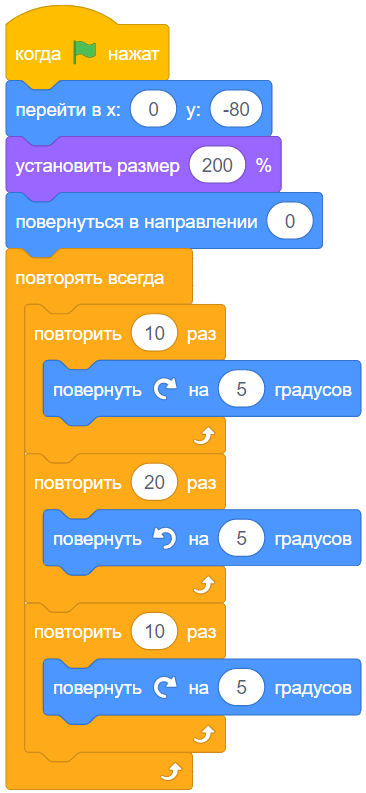

Этапы:
Этап 2
1
Поработаем с циклами
Нам понадобится цикл, чтобы стрелка вращалась.
Описание задания:
Нажми на флажок.
2
5 x 10 = 50?
С помощью такого скрипта повернем стрелку на 50 градусов вправо:
3
Весь скрипт:
Теперь выполни задание, с которым ты познакомился выше:
готово:
Стрелка поворачивается на 50 градусов вправо;
Стрелка поворачивается на 50 градусов влево;
Стрелка поворачивается на 50 градусов вправо;,
(в исходное положение)
Стрелка вращается постоянно.